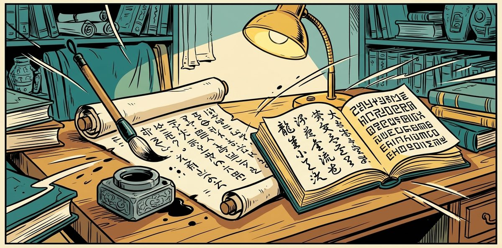

Before a listed company releases the Chinese version of its quarterly report, someone has to check it against the English line by line. Figures, negations, periods, terms, tone and punctuation all have to match, and the sponsor's statement must keep its own wording.
I built a review where a team of Claude specialists, each with one narrow job, flags possible errors, and rules in code check every finding. Code applies the approved glossary terms by itself, as tracked changes. It can run live or as one batch.
The editor keeps every other decision: each proposed change waits until the editor accepts, edits or rejects it. It was tested on a sample report with 20 planted defects and caught all 20. Try the review demo as the editor.
| Problem | A listed company releases its quarterly report in English and Chinese, and the Chinese must say exactly what the English says. Checking every figure, negation, term, tone and punctuation mark by eye is slow, and a missed figure reaches investors. The sponsor's statement must keep its own wording, and every change needs an editor's sign-off. |
|---|---|
| Built | A glossary stage corrects settled terms in code, then three Claude specialists check accuracy, wording and tone, each within its own categories. Rules in code, also served as six MCP tools, check every finding, overlapping flags become one correction, and a fresh grader marks each sound, doubtful or wrong. Code applies the approved glossary terms; every other change reaches the Word file only when the editor accepts or edits it. |
| Evidence | Tested on a sample report with 20 planted defects: wrong figures, a dropped negation, a missing risk sentence, an added forecast, promotional tone and broken punctuation. The live run and the Message Batches run each caught all 20 with no required correction on a clean paragraph, and Word's accept-all and reject-all copies matched on all 48 passages. Before real users it still needs a security review, a monitoring owner and the team's approval. |
One translated report: AI flags possible errors, code checks every finding, and the editor decides each correction.
Each specialist has one job and its own categories, so a finding is easy to judge and easy to check. The specialists work independently, which is why the same fault can be flagged twice and is then merged into one box. Nothing an agent proposes changes the text on its own.
| Role | Who | What it does |
|---|---|---|
| Coordinator | Code | Splits each section into requests and gives each specialist only its paragraphs. Sends back paragraphs left undone and links findings that disagree. |
| Accuracy specialist | Claude Sonnet 5.5 | Finds omissions, mistranslations and additions: figures, periods, direction of change, negations. Works in two smaller requests on a full section. |
| Section specialist | Claude Sonnet 5.5 | Finds wording, fluency, structure, punctuation and quotation-mark faults against the house style. |
| Tone specialist | Claude Opus 5.5 | Finds promotional, exaggerated or casual tone in a regulatory filing. |
| Consolidator | Code, Claude Sonnet 5.5 when fixes differ | Turns overlapping flags into one box with one correction. Every flag stays in the box. |
| Grader | Claude Opus 5.5, fresh context | Marks every box sound, doubtful or wrong with a reason. It did not write the findings and removes none. |
| Editor | A person | Accepts, edits or rejects every box. Apart from the glossary terms, no change reaches the Word file without that decision. |
| Capability | What it does and why it matters |
|---|---|
| Checks the Chinese against the English | Compares every paragraph for figures, conversions, periods, negations, omissions and additions. Designed to catch the faults that would mislead an investor. |
| Applies the glossary without asking | Replaces renderings the glossary rules out with the approved term, as tracked changes. Settled terms never wait on the editor. |
| Keeps the house style and tone | Flags half-width punctuation, quotation marks, stiff wording and promotional tone. Each finding cites the rule it rests on. |
| Protects the sponsor's statement | Allows only accuracy corrections in the protected passage. Its wording and tone are never changed. |
| Shows one box per fault | Merges flags from several specialists on the same words into one correction. The editor decides once, with every flag in view. |
| Gives a second opinion | A separate grader marks each correction sound, doubtful or wrong. The editor sees the verdict beside the box. |
| Writes the reviewed Word file | The glossary changes and the findings the editor accepted or edited become tracked changes and comments in the translator's file. A review summary counts what was found and decided. |
| Runs the full report as a batch | The whole report can run on the Message Batches API. Failed requests are redone live, and the same checks follow. |
| Page | What you can do |
|---|---|
| Review demo | Be the editor: accept, edit or reject each box from the recorded batch run. The Reviewed report and the Review summary follow your decisions, and Reset starts again. No key and no server are needed. |
| The sample | English report · the 20 planted defects · answer key: the sample report the review was tested on. |
| The resources | Brief · Glossary · House style: everything a finding may cite. |
The full review runs locally with your own Anthropic API key, and usage is billed to your account. Use a key with a spending limit; the benchmark stops itself at USD 5. A team service would hold the key on a server.
The review was tested on a sample report with 20 planted defects, scored against an answer key written before any run. The live run and the Message Batches run each caught all 20, with no required correction on a clean paragraph. In Word, accepting every change gave the decided text on all 48 passages, and rejecting every change gave the translator's original.
| Group | Example | What it must do | What made it happen |
|---|---|---|---|
| Accuracy (8) | Revenue RM86.42 million written as 8,462万令吉. | Flag it and correct it to 8,642万令吉, keeping the thousands separator. | Specialist: accuracy. Rule in code: the punctuation hook keeps a comma between digits. |
| Protected passage | The sponsor's statement leaves out "assumes no responsibility". | Restore the missing meaning with no other change to the wording. | Rule in code: only accuracy findings pass inside the protected passage (protected_passage). |
| Tone (3) | "Expects performance to remain satisfactory" rendered as certain to hit a new record. | Restore the measured wording of the English. | Specialists: tone and accuracy; their flags on the same words share one box. |
| Section (6) | Two half-width commas in one sentence. | Fix every wrong mark in the sentence, not only the first. | Rule in code: a half fix is refused (half_width_left) and sent back. |
| Glossary stage (3) | Revenue written as 营业额 against the glossary's 收入. | Change every planted occurrence and nothing else. | Code: glossary_stage.js, no model. |
| Clean paragraphs | The paragraphs with no planted defect. | No required correction. | Prompt and rule in code: a finding is a required correction (wrong or misleading if released) or a suggestion, and cites a source. The grader's verdict sits beside each box. |
| Word file | Word's own accept-all and reject-all copies of the reviewed file. | The accept-all copy equals the text with the glossary terms and the editor's decisions applied. The reject-all copy equals the translator's original. | Code: one decision gate shared by the Word writer, the summary and the demo. |
See for yourself: decide the findings in the demo and watch the reviewed report change.
Evaluating the work, or thinking about a document review for your own team?
Solid blue: Claude. Dashed: code. Bold: a person. Light: documents.
| Layer | Components |
|---|---|
| Review | Claude Sonnet 5.5 (accuracy, section, consolidator) · Claude Opus 5.5 (tone, grader) · Structured outputs · Prompt caching · Message Batches API |
| Rules and tools | Node.js · One shared tools.js · Model Context Protocol SDK · stdio transport |
| Documents and pages | Word OOXML (tracked changes, comments) · @xmldom/xmldom, JSZip · Vanilla HTML and JavaScript · GitHub Pages |
tools.js holds the six tools and every rule. The MCP server, the live and batch paths, the tests and the demo page all load it.config/document.json holds everything that changes per document: front-matter names, the protected passage, sections and banned wording. The code itself carries no domain wording.coordinator.js runs a section live; lib/batch.js runs it on the Message Batches API. Both hand results to the same checks, consolidator.js and grader.js.lib/apply_decisions.js turns the editor's decisions into the reviewed text. The Word writer, the review summary and the demo all use it, so they cannot disagree.The coordinator is code. Each section of up to 20 paragraphs becomes up to four requests: accuracy in two halves (one for a short section), section and tone in one each. Every specialist gets a fixed, cached prompt and only its own paragraphs, placed last, with one paragraph of context before and after.
Each specialist answers in structured output, and every finding is checked by the same rules the MCP tools enforce. The coordinator then checks coverage, redoes paragraphs left undone once and links findings that disagree. The consolidator merges overlapping flags and the grader annotates every box.
| Tool | Who may call (MCP server) | Checked in code |
|---|---|---|
get_pairs | Specialists | The range is inside the document; the protected passage is marked. |
record_finding | Specialists | Target exists; both spans are in that target; category allowed for the caller; must or should; cited source exists; full-width punctuation, a figure's comma excepted; every wrong mark in a punctuation finding's sentence; no two marks side by side; accuracy only in the protected passage; no duplicate. |
mark_done | Specialists | The paragraph is assigned to this caller in this request. |
get_coverage | Coordinator only | Refused to a specialist. |
request_recheck | Coordinator only | One recheck per paragraph and specialist. |
flag_conflict | Coordinator only | Both findings exist and overlap; it links them and never settles them. |
In a review run the specialists answer in structured output, and code applies these same checks.
| Specialist | Categories | Model and effort |
|---|---|---|
| Accuracy | omission, mistranslation, addition | Sonnet 5.5, high |
| Section | wording, fluency, structure, punctuation, quotation | Sonnet 5.5, high |
| Tone | register (tone) | Opus 5.5, medium |
| Consolidator | one change per box | Sonnet 5.5, high |
| Grader | sound, doubtful or wrong | Opus 5.5, medium |
Solid blue: Claude. Dashed: code. Bold: a person. Light: documents.
| Run | Defects caught | Boxes | Required corrections on clean paragraphs |
|---|---|---|---|
| Live | 20 of 20 | 18 | 0 |
| Message Batches | 20 of 20 | 18 | 0 |
Both runs caught the same 20 planted defects; none was caught by one run only. The demo replays the batch run.
| Principle | How it is applied here |
|---|---|
| The English is the authority | Every finding names the English words it rests on, and code checks they are really there. The review finds departures and proposes the smallest fix; it never retranslates. |
| Settled terms need no model | The glossary lists the approved term and the renderings to avoid. Code applies those changes as tracked changes, so no model is asked and nothing waits on the editor. |
| One narrow job per specialist | Accuracy, section and tone each have their own categories. A finding outside its specialist's categories is refused in code. |
| Every finding cites its source | A finding must cite a glossary entry, a house style rule or a brief point. A source that does not exist is refused. |
| Punctuation fixed in code | Half-width marks in a suggestion become full-width before the checks run, except a comma inside a figure. A punctuation fix must cover every wrong mark in its sentence. |
| The protected passage keeps its wording | Inside the sponsor's statement only an accuracy correction is allowed. A change of wording or tone there is refused, whoever proposes it. |
| One box per fault | When several specialists flag the same words, their flags share one box with one correction. Every flag stays visible to the editor. |
| A second opinion, never a filter | A fresh grader marks every box sound, doubtful or wrong with a reason. It removes nothing; the editor decides. |
| Every other change waits for the editor | Apart from the glossary terms, only findings the editor accepts or edits reach the Word file. An edit is checked by the same rules as a finding. |
| Tested before trusted | 20 defects were planted and the answer key written before any run. Findings were read after every run, even after a full score. |
The review page runs on a local server bound to the laptop, and the key stays in a local file. A team service would add access control, hold the key on a server and review how unreleased reports are handled.
Every rendering the glossary lists as one to avoid is found and replaced by the approved term. Longer matches win at the same place, and matches never overlap. The changes are written as tracked changes before any specialist reads the text.
// glossary_stage.js: glossaryMatches
/** Every avoided rendering in a text: [{ start, end, from, to, entry }], longest first at a place, no overlaps. */
function glossaryMatches(text, entries) {
const hits = [];
for (const e of entries) for (const bad of e.avoid) {
for (let i = text.indexOf(bad); i >= 0; i = text.indexOf(bad, i + 1)) hits.push({ start: i, end: i + bad.length, from: bad, to: e.zh, entry: e.id });
}
hits.sort((a, b) => a.start - b.start || (b.end - b.start) - (a.end - a.start));
const kept = [];
for (const h of hits) if (!kept.some((k) => h.start < k.end && k.start < h.end)) kept.push(h);
return kept;
}The coordinator gives each specialist only its own paragraphs and categories. Accuracy gets two smaller requests on a full section, so it reads closely. Every request carries a custom_id, which the batch path uses to match results.
// prompt.js: sectionRequests
function sectionRequests(doc, section, specialists = ["accuracy", "section", "register"]) {
const reqs = [];
const mid = Math.min(section.to, section.from + 9);
const id = (sp, a, b) => `${section.id}-${sp.slice(0, 3)}-p${String(a).padStart(3, "0")}-${String(b).padStart(3, "0")}`;
if (specialists.includes("accuracy")) {
reqs.push({ custom_id: id("accuracy", section.from, mid), specialist: "accuracy", from: section.from, to: mid, front: section.front_matter });
if (mid < section.to) reqs.push({ custom_id: id("accuracy", mid + 1, section.to), specialist: "accuracy", from: mid + 1, to: section.to, front: false });
}
if (specialists.includes("section")) reqs.push({ custom_id: id("section", section.from, section.to), specialist: "section", from: section.from, to: section.to, front: section.front_matter });
if (specialists.includes("register")) reqs.push({ custom_id: id("register", section.from, section.to), specialist: "register", from: section.from, to: section.to, front: section.front_matter });
return reqs;
}A finding must cite a real source, use full-width punctuation and fix every wrong mark in its sentence. Inside the protected passage only an accuracy correction passes. Each refusal names exactly what to fix.
// tools.js: validateFinding, the main checks
if (!sourceExists(sources, f.source))
return err("unknown_source", `source ${f.source} does not exist; cite a glossary entry (G01), a house style rule (H1) or a brief point (B1)`);
const suggestion = String(f.suggestion || "");
if (HALF_WIDTH.test(suggestion)) return err("half_width_punctuation", "suggested Chinese uses half-width punctuation; use full-width marks");
if (!String(f.issue || "").trim() || !String(f.reason || "").trim()) return err("missing_field", "issue and reason are required");
const span = { start: at, end: at + zhSpan.length };
const dbl = (suggestion || f.category === "addition") && doubledMark(tgt.zh, span.start, span.end, suggestion);
if (dbl) return err("doubled_punctuation", `the change would leave "${dbl}" in ${tgt.key}: the text around zh_span already has its own mark; drop the mark from the suggestion or take it into zh_span`);
// A punctuation finding fixes the whole sentence: no half-width mark may be left outside its span.
if (f.category === "punctuation") {
const a = Math.max(tgt.zh.lastIndexOf("。", at - 1), tgt.zh.lastIndexOf("！", at - 1), tgt.zh.lastIndexOf("？", at - 1)) + 1;
const ends = ["。", "！", "？"].map((c) => tgt.zh.indexOf(c, span.end)).filter((i) => i >= 0);
const b = ends.length ? Math.min(...ends) + 1 : tgt.zh.length;
const sentence = tgt.zh.slice(a, b), re = new RegExp(HALF_WIDTH.source, "g"); let m;
while ((m = re.exec(sentence))) {
const i = a + m.index;
if (i < span.start || i >= span.end) return err("half_width_left", `another half-width mark "${m[0]}" is left in the same sentence at ${tgt.zh.slice(Math.max(a, i - 4), i + 5)}; widen zh_span to cover every wrong mark and correct them all`);
}
}
const inProtected = tgt.protected.some((s) => overlap(s, span));
if (inProtected && !ACCURACY.includes(f.category))
return err("protected_passage", `${tgt.key}: the span is inside a protected passage; no ${f.category} edit there (only an accuracy correction)`, false);A refused finding is sent back to its specialist with the exact error, up to two rounds. What still fails is listed for the editor, never dropped quietly.
// lib/review.js: retryRefused
/** Send refused findings back with their exact errors, up to 2 rounds; what still fails is reported. */
async function retryRefused(doc, sources, req, result, opts = {}) {
const s = SETTINGS[req.specialist];
const user = userMessage(doc, req.specialist, req.from, req.to, req.front);
let refused = result.refused, usd = 0;
for (let round = 1; round <= MAX_RETRY_ROUNDS && refused.length; round++) {
const rr = await callJSON({ label: `${opts.labelPrefix || ""}${req.specialist}:retry`, model: s.model, effort: s.effort, maxTokens: s.maxTokens,
system: systemPrompt(req.specialist), schema: answerSchema(req.specialist), user: `${user}\n\n${retryMessage(refused)}` });
usd += rr.usd || 0;
if (!rr.ok) break;
const again = checkAnswer(doc, sources, req, rr.data);
result.accepted.push(...again.accepted.filter((a) => !result.accepted.some((b) => b.target === a.target && b.zh_span === a.zh_span && b.category === a.category)));
refused = again.refused;
}
return { failed: refused, usd };
}Overlapping flags on the same words become one group. If every fix leaves the same text, that fix is used; if they differ, one combined change is written and checked in code.
// consolidator.js: consolidate
async function consolidate(doc, section, rec, opts = {}) {
indexDocument(doc);
const out = [], failed = []; let usd = 0, combined = 0, same = 0;
for (const g of groupOverlapping(rec.findings)) {
if (g.length === 1) { out.push(g[0]); continue; }
const results = new Set(g.map((f) => resultText(doc, f)));
if (results.size === 1) {
// Every flag leaves the same text: the widest span carries the change.
const widest = g.reduce((a, b) => (b.zh_span.length > a.zh_span.length ? b : a));
const c = checkCombined(doc, g, widest, config.banned_in_output);
if (c.ok) { out.push({ ...c.box, change_by: "same" }); same++; continue; }
}
const r = await combine(doc, g, opts);
usd += r.usd;
if (r.box) { out.push(r.box); combined++; }
else {
const c = checkCombined(doc, g, g[0], config.banned_in_output);
out.push(c.ok ? { ...c.box, change_by: "first flag" } : g[0]);
failed.push({ target: g[0].target, flags: g.map((f) => f.id), error: r.failed });
}
}The grader did not write the findings and reads them in a separate request. Code attaches its verdict to each box and keeps every box, whatever the verdict.
// grader.js: attaching the verdicts
const byId = Object.fromEntries(findings.map((f) => [f.id, f]));
let graded = 0;
for (const n of r.data.notes) if (byId[n.id] && targets.includes(byId[n.id])) { byId[n.id].grader = { verdict: n.verdict, note: n.note }; graded++; }One function decides whether an accepted finding is a change, a deletion or a comment. An addition with no suggestion deletes the added words, except inside the protected passage.
// tools.js: findingMode
function findingMode(doc, f) {
const t = doc.byKey[f.target];
const span = { start: f.zh_start, end: f.zh_start + String(f.zh_span || "").length };
if (f.suggestion) return "change";
if (t && t.protected.some((s) => overlap(s, span))) return "comment";
return f.category === "addition" || (f.flags || []).some((x) => x.category === "addition") ? "delete" : "comment";
}Only accepted or edited findings go further, and an edit is checked again. The Word writer, the summary and the demo's reviewed report all take their text from this gate.
// lib/apply_decisions.js: gate
function gate(doc, findings, decisions, banned) {
tools.indexDocument(doc);
const changes = [], comments = [], refused = [], undecided = [], rejected = [];
for (const f of findings) {
const d = decisions[f.id];
if (!d) { undecided.push(f.id); continue; }
if (d.decision === "reject") { rejected.push(f.id); continue; }
if (!["accept", "edit"].includes(d.decision)) { refused.push({ id: f.id, why: `unknown decision ${d.decision}` }); continue; }
let text = f.suggestion;
if (d.decision === "edit") {
const c = tools.checkEdit(doc, f, d.text, banned);
if (!c.ok) { refused.push({ id: f.id, why: c.error }); continue; }
text = c.text;
}
const t = doc.byKey[f.target];
if (!t || t.zh.slice(f.zh_start, f.zh_start + f.zh_span.length) !== f.zh_span) { refused.push({ id: f.id, why: "span no longer in the text" }); continue; }
const w = tools.bannedWording(text, banned) || tools.bannedWording(f.issue, banned) || tools.bannedWording(f.reason, banned);
if (w) { refused.push({ id: f.id, why: `banned wording: ${w}` }); continue; }
const mode = tools.findingMode(doc, { ...f, suggestion: text });
if (mode === "comment") comments.push({ ...f, decided: d });
else changes.push({ ...f, text: mode === "delete" ? "" : text, decided: d });
}
return { changes, comments, refused, undecided, rejected };
}Results come back matched by custom_id. Errored, expired or cut-off requests and any paragraphs left undone are redone live. Then the same checks, boxes and grader run as in a live run.
// lib/batch.js: collect
for await (const res of await c.messages.batches.results(b.id)) {
const req = byId[res.custom_id]; if (!req) continue;
const t = res.result.type;
if (t !== "succeeded") { redo.push({ req, why: t }); continue; } // errored, expired, canceled
const msg = res.result.message;
record(`${b.section}:${req.specialist}:batch`, msg.model, msg.usage, true);
const a = parseAnswer(msg);
if (!a.ok && a.error.category === "max_tokens" && req.to > req.from) { // split the range and redo live
const mid = Math.floor((req.from + req.to) / 2);
redo.push({ req: { ...req, custom_id: req.custom_id + "-a", to: mid }, why: "max_tokens" }, { req: { ...req, custom_id: req.custom_id + "-b", from: mid + 1, front: false }, why: "max_tokens" });
continue;
}
if (!a.ok) { redo.push({ req, why: a.error.category }); continue; } // refusal (live call uses the fallback) or invalid JSON
const checked = checkAnswer(doc, sources, req, a.data);
const retry = await retryRefused(doc, sources, req, checked, { labelPrefix: `${b.section}:` });
ok.push({ req, ok: true, accepted: checked.accepted, failed: retry.failed, done: checked.done, gaps: checked.gaps });
}
for (const r of ok) if (r.gaps.length) redo.push({ req: { ...r.req, custom_id: r.req.custom_id + "-gap", from: Math.min(...r.gaps), to: Math.max(...r.gaps), front: false }, why: "gap" });
const live = await pool(redo, 4, (x) => runRequest(doc, sources, x.req, { labelPrefix: `${b.section}:retry:` }));
const all = ok.concat(live.filter((r) => r.ok));
const failedRequests = live.filter((r) => !r.ok).map((r) => ({ custom_id: r.req.custom_id, error: r.error }));
const section = doc.sections.find((s) => s.id === b.section);
const rec = assemble(doc, section, all, failedRequests);
rec.consolidated = await consolidate(doc, section, rec, { labelPrefix: `${b.section}:` });
if (!opts.noGrader) { const g = await gradeSection(doc, section, rec.findings, { labelPrefix: `${b.section}:` }); rec.grader = g; }A defect is caught by a finding on its paragraph, in one of its categories, whose span overlaps the planted span. A finding on a clean paragraph counts against the run.
// benchmark/score.js: score
for (const c of key.review) {
const hits = findings.filter((f) => f.target === c.target && [f.category, ...(f.flags || []).map((a) => a.category)].some((x) => c.categories.includes(x)) &&
(!c.span || (f.zh_start < c.span[1] + 2 && c.span[0] - 2 < f.zh_start + f.zh_span.length)) && (!c.suggestion_contains || c.suggestion_contains.every((w) => (f.suggestion || "").includes(w))));
hits.forEach((f) => used.add(f.id));
cases.push({ id: c.id, target: c.target, stage: c.stage, pass: hits.length > 0, by: hits.map((f) => `${f.id} ${f.specialist}/${f.category}`), what: c.what });
}
const changes = (glossaryReport.changes || []).map((x) => `${x.target}|${x.from}`);
const planted = new Set(key.glossary.flatMap((g) => g.occurrences.map((o) => `${o.target}|${o.from}`)));
for (const g of key.glossary) {
const missing = g.occurrences.filter((o) => !changes.includes(`${o.target}|${o.from}`));
cases.push({ id: g.id, target: g.occurrences.map((o) => o.target).join(" "), stage: "glossary", pass: missing.length === 0, by: missing.length ? [`missed ${missing.map((o) => o.target).join(", ")}`] : ["glossary stage"], what: g.what });
}| Group | Cases | Pass when |
|---|---|---|
| Accuracy | 8 | A finding on the right paragraph, its Chinese span overlapping the planted span, in an accuracy category; for the protected passage, the suggestion restores the missing meaning. |
| Tone | 3 | The same, in the tone (register) category or a neighbouring one. |
| Section | 6 | The same, in the planted category or a neighbouring section category. |
| Glossary stage | 3 | Every planted occurrence changed to the approved term, and no other change. |
| Clean paragraphs | all others | No required correction; each suggestion there is counted and read. |
The code that decides how the review behaves, cut directly from the project files. Page markup and styling are left out. View the code on GitHub.
projects/chinese-translation-quality-check/
├── config/document.json # Every rule that changes per document
├── resources/ # Brief B1 to B4, glossary G01 to G30, house style H1 to H8
├── sample/ # English report, correct Chinese, 20 planted defects
├── glossary_stage.js # Settled terms as tracked changes, no model
├── build_document.js # English and Chinese paired, target by target
├── tools.js # The six tools and every rule
├── mcp_server.mjs # MCP server for the six tools
├── prompt.js # One fixed prompt per specialist; the request split
├── coordinator.js # Live section run, gaps re-delegated, conflicts linked
├── consolidator.js # One box per fault, one correction
├── grader.js # Fresh reviewer: sound, doubtful or wrong
├── lib/ # Claude calls, retries, batch path, decisions, Word writer
├── batch/ # Estimate, submit and collect the Message Batches run
├── write_docx.mjs # Decided findings into the Word file
├── write_summary.mjs # The review summary
├── review.html # The editor's page (local server or demo)
├── build_demo.mjs # -> demo.html with the recorded batch run
├── benchmark/
│ ├── Answer Key.md # Written from the defects before any run
│ ├── test_tools.mjs # Every rule and refusal, no API key
│ ├── run_benchmark.mjs # Live, batch, parity; USD 5 cap
│ └── results/ # Recorded live and batch runs
├── spike/ # Word accept-all and reject-all check
└── CLAUDE.md # Layout, rules, steps after a change